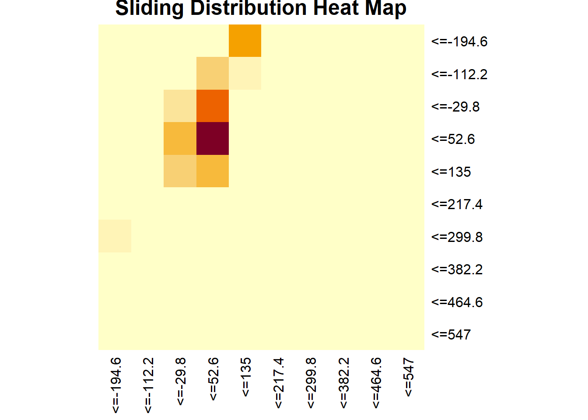

4 keep sample matrix over a sliding window
definitions and initialization
set.seed(1)
reset_stream(strA1)
w <- 500
binsA <- rep(0, length(splits))
names(binsA) <- paste("<=",splits,sep="")
binsB <- rep(0, length(splits))
names(binsB) <- paste("<=",splits,sep="")
mx<-matrix(0,10,10)
rownames(mx)<-colnames(mx)<-names(binsA)
windowA <- windowB <- NULLiteration
# iterative step
for (i in 1:itera){
ai <- get_points(strA1)[1,1]
bi <- get_points(strA1)[1,2]
binA <- which(ai <= splits)[1]
binsA[binA] <- binsA[binA] + 1
binB <- which(bi <= splits)[1]
binsB[binB] <- binsB[binB] + 1
mx[binA,binB]<-mx[binA,binB] + 1
windowA <- c(windowA, ai) # defining two windows
windowB <- c(windowB, bi) # one for each stream
if (length(windowA) > w) {
oldbinA <- which(windowA[1] <= splits)[1]
binsA[oldbinA] <- binsA[oldbinA] - 1
windowA <- windowA[-1]
oldbinB <- which(windowB[1] <= splits)[1]
binsB[oldbinB] <- binsB[oldbinB] - 1
windowB <- windowB[-1]
mx[oldbinA,oldbinB]<-mx[oldbinA,oldbinB] - 1 # droping the first value from the window
}
# printing the two vectors just for control
if (i %% 500 == 0){
cat("\n ### Iteration",i, "\n")
print(binsA)
print(binsB)
}
}##
## ### Iteration 500
## <=-194.6 <=-112.2 <=-29.8 <=52.6 <=135 <=217.4 <=299.8 <=382.2
## 55 53 117 186 26 12 22 11
## <=464.6 <=547
## 8 10
## <=-194.6 <=-112.2 <=-29.8 <=52.6 <=135 <=217.4 <=299.8 <=382.2
## 28 24 65 268 90 14 9 2
## <=464.6 <=547
## 0 0
##
## ### Iteration 1000
## <=-194.6 <=-112.2 <=-29.8 <=52.6 <=135 <=217.4 <=299.8 <=382.2
## 47 43 108 176 63 16 20 8
## <=464.6 <=547
## 10 9
## <=-194.6 <=-112.2 <=-29.8 <=52.6 <=135 <=217.4 <=299.8 <=382.2
## 35 17 68 287 68 12 10 3
## <=464.6 <=547
## 0 0
##
## ### Iteration 1500
## <=-194.6 <=-112.2 <=-29.8 <=52.6 <=135 <=217.4 <=299.8 <=382.2
## 56 46 111 155 48 18 29 13
## <=464.6 <=547
## 13 11
## <=-194.6 <=-112.2 <=-29.8 <=52.6 <=135 <=217.4 <=299.8 <=382.2
## 39 29 37 275 87 19 11 3
## <=464.6 <=547
## 0 0
##
## ### Iteration 2000
## <=-194.6 <=-112.2 <=-29.8 <=52.6 <=135 <=217.4 <=299.8 <=382.2
## 62 42 98 180 55 14 22 8
## <=464.6 <=547
## 9 10
## <=-194.6 <=-112.2 <=-29.8 <=52.6 <=135 <=217.4 <=299.8 <=382.2
## 31 20 51 283 86 19 8 2
## <=464.6 <=547
## 0 0heat map with the values of the matrix
heatmap(mx, Colv = NA, Rowv = NA, scale="none", symm = F, revC = T,
main = "Sliding Distribution Heat Map")